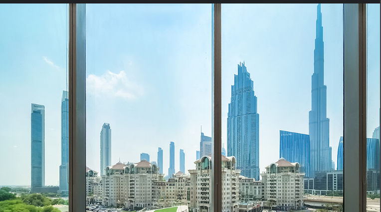

Our Mission
At Prime Health, our mission is to merge cutting-edge medical technology with a patient-first approach, ensuring that every individual receives quality healthcare with compassion and integrity.
Providing world-class healthcare with compassion, innovation, and personalized patient care.
Prime Health is a premier healthcare institution in Dubai, dedicated to delivering exceptional medical services with a perfect blend of advanced technology and compassionate care. Our team of highly qualified specialists ensures each patient receives personalized treatment in a comfortable and safe environment.
We believe in holistic care, addressing both physical and emotional wellbeing. From routine check-ups to complex medical procedures, our facilities and staff are equipped to provide top-notch healthcare experiences.
Advanced diagnostic tools and modern equipment ensure precise treatment and improved patient outcomes.
Our multicultural team provides inclusive, culturally sensitive, and patient-centered care for all.
We are available around the clock to provide guidance, emergency support, and quick assistance whenever needed.
Every patient receives empathetic attention and care tailored to their medical and emotional needs.
At Prime Health, our mission is to merge cutting-edge medical technology with a patient-first approach, ensuring that every individual receives quality healthcare with compassion and integrity.
We offer state-of-the-art infrastructure, sophisticated diagnostic systems, and advanced treatment methods that combine innovation with comfort to enhance patient experience and care quality.
Prime Health is strategically located in Al Barsha, Dubai, providing easy access to residents and visitors alike. Our hospital is committed to serving both local and international patients with world-class healthcare services.

Appointments
Patients
Doctors
Treatments
Cardiologist
Neurologist
Orthopedic
Pediatrician
Dermatologist
Yes, booking an appointment helps us serve you efficiently and minimizes wait times.
We accept most major insurance providers in the UAE for hassle-free medical access.
Yes, our secure telemedicine platform allows online consultations for convenience and safety.
Emergency services are available 24/7, and general consultations are scheduled by appointment.
Yes, we assist international patients with travel, accommodation, and medical coordination.